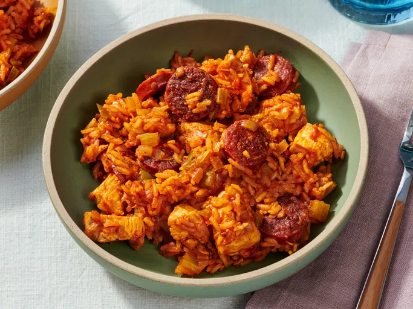

Jambalaya

Description
Lavigne's award winning jambalaya recipe. Here you go! A couple of notes:
This makes a HUGE amount of jambalaya, so even if you halve it, you'll still have plenty.
Note Brian's note in red at the bottom of the recipe. I don't usually add the extra chicken,
but I definitely add 2 stalks celery (even for 1/2 the recipe) because I think it really adds something.
- 1 pound bacon (cheap)
- 3 pounds boneless skinless chicken thighs
- 2 pounds smoked sausage (any good quality pork sausage should do)
- 3 med yellow onions
- 2 green bell pepper
- 2 serrano peppers (seeds removed)
- 1½ tablespoons creole/cajun seasoning (Tony Chachere's or Slap Ya Mamas or the like)
- ¾ tablespoon black pepper
- ¼ teaspoon of cayenne pepper
- 1 large can of swanson chicken broth
- 1 small can of swanson veggie broth
- 4 cups Mahatma Jasmine rice
- First render the fat, all the fat, off the bacon. Cook it slow and low until crispy, then remove and discard the lean or eat it till it's gone (my personal preference).
- Then turn up the heat to med-high and add the chicken thighs. Fry in the bacon fat until brown on the outside and just cooked on the inside. Use your stainless steel spoon to break the thighs apart while cooking. (I usually add the thighs in 2 batches so as not to crowd them and to get a nice crust.)
- Remove the thighs, and keep breaking them apart if needed.
- Next add the sausage (cut into rounds and/or half rounds). Fry it in the bacon fat until crispy on the outside, then remove it into the same bowl as the chicken.
- There should now be a fair amount of fat and a layer of brown, almost burning, goodness stuck to the bottom of the pot.
- Add the chopped veggies all at once and fry until very soft. This should deglaze the stuff off the bottom of the pot, but be sure to scrape it to get all the debris off (this is where all your color comes from).
- If it gets dry, just pour a little beer into it as needed to keep the veggies from sticking.
- Add all your spices when you add the veggies as well; the salt helps break down the vegetables.
- Once the veggies are sufficiently soft and the brown goodness is off the bottom, add the meat and stock into the pot.
- Stir to incorporate, and taste to see about seasonings (remember it has to season the 4 cups of rice you are about to put in).
- Adjust the heat to bring it up to a nice SLOW SIMMER.
- Add the rice, stir for a good minute, and let it come back to a SLOW SIMMER. Stir once more.
- Reduce the heat about as far as you can and put the lid on.
- Turn the flame off somewhere between 10 and 15 minutes, then wait another 10-15 minutes before removing the lid (about 30 minutes total). DO NOT REMOVE THE LID PRIOR TO THIS POINT.
- This is when the magic happens. Getting the timing right on turning the flame down, putting the lid on, turning the flame off, and taking the lid off is what makes a Jambalaya (along with your liquid-to-rice ratio).
- Once the lid is off, turn it out into a big aluminum pan to stop the cooking. (Cast iron will keep cooking, so if you want that, leave it in the pot.)
- Serve, and watch in amazement as the judges vote yours the best and award you a Purple and Gold Paddle. You have arrived.
Home